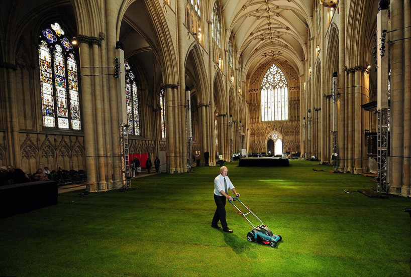
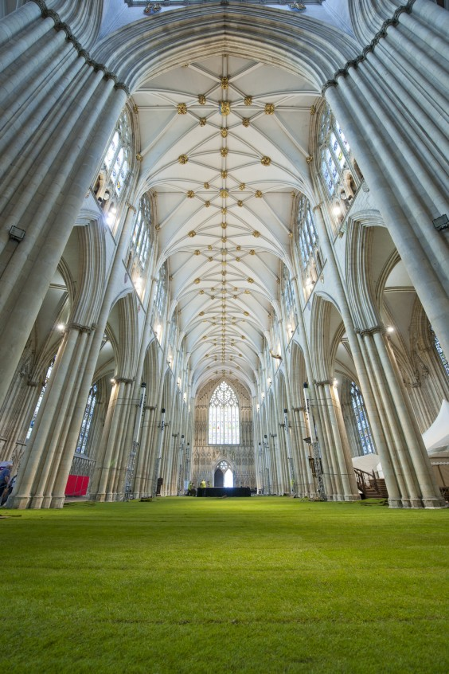
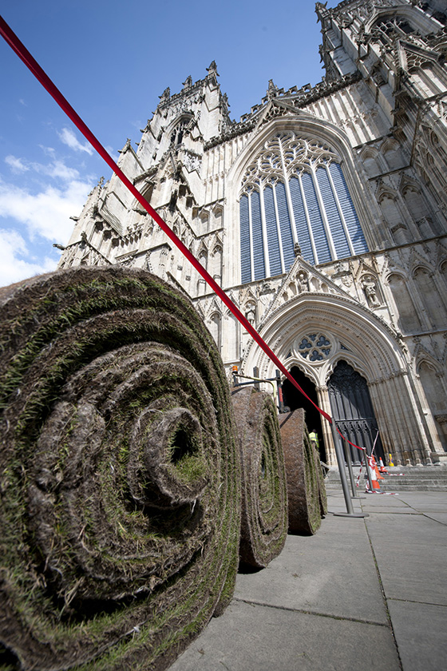
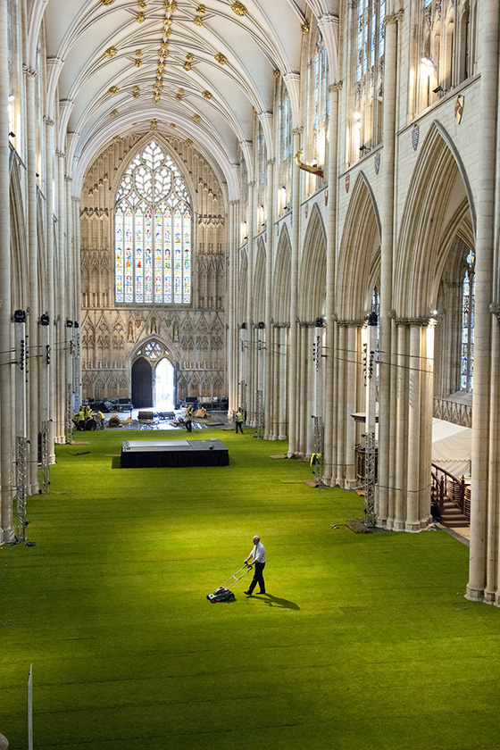

Grassified
At first glance I was almost certain that someone cleverly photoshopped a lawn inside York Minster Cathedral, but apparently this was the work of Wow! Grass! that temporarily ‘grassifies’ offices, cathedral, art spaces and even sofas.
The grass that they install is grown in a thick layer of felt, so there is no dirt left behind. When the event is over they roll it up and install it somewhere else.